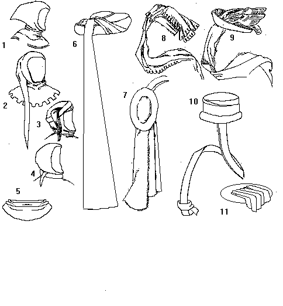

Hoods, Chaperons and Liripipes
Hoods
Chaperons and Liripipes

- Basic Hood
- Basic Hood with a Liripipe
- Basic Hood with a Liripipe, wrapped around the head
- Basic Hood with a Liripipe, wrapped around throat
- Basic Hood, worn down around the shoulders
- Chaperon
- ...
- ...
- ...
- ...
- A Basic Chaperon, consisting of a Rondel and a ?
Return to Contents
Some Clothing of the Middle Ages - Hoods, Chaperons and Liripipes, by I. Marc
Carlson. Copyright 1996.